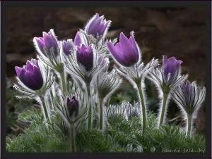
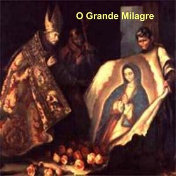
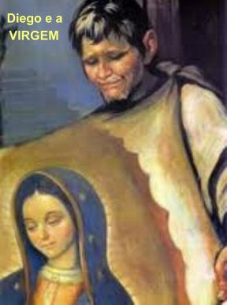
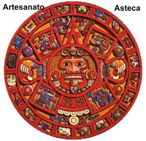
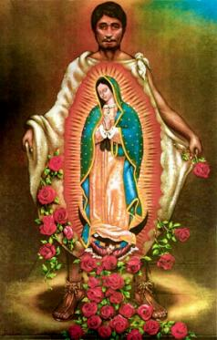
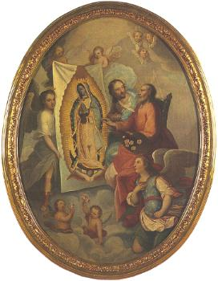

O GRANDE MILAGRE
INICIO DO MILAGRE
- “Sobe Filho Meu o menor, ao alto da colina, lá onde me viste e onde te revelei a Minha Palavra. Lá encontrarás flores variadas. Corta-as e as reúnem todas juntas. Depois desce aqui, trazendo as flores a Minha Presença”.

Juan Diego obedeceu. Chegando ao alto da colina se espantou admirado com a notável variedade de maravilhosas e perfumadas flores. Não era a estação das flores, estava em pleno mês de Dezembro, quando o frio e a neve destroem toda a vegetação. E por outro lado, aquele não era o lugar para se encontrar alguma flor, pois o solo era arenoso, com muito pedregulho, abrolhos, espinhos e cactos. Então, somente um milagre da MÃE DE DEUS poderia fazer nascer naquele solo flores tão lindas e perfumadas.
Juan Diego compreendeu aquela realidade e cheio de emoção colheu-as cuidadosamente, juntando as flores na dobra de seu pobre manto, uma tilma feita de fibras vegetais, que usava para transportar cargas. Desceu transportando as flores e apresentou a SANTÍSSIMA VIRGEM MARIA. Ela se aproximou e tomou-as nas mãos, arrumou-as de maneira graciosa e colocou-as novamente na dobra do manto do Diego. E disse:
- “Meu filhinho, esta variedade de flores é o sinal de comprovação que levarás ao senhor Bispo. De Minha Parte dirás a ele que veja nas flores o Meu Desejo e que seja feita a Minha Vontade. E tu, Juantzin, que és o Meu mensageiro, em ti deposito a Minha confiança. E por isso, te mando que somente na presença do Bispo estendas o teu manto. Somente na presença dele. E lhe contarás tudo detalhadamente, como te mandei subir ao cimo da colina de “Tepeyac” e cortar as flores. Conta cada coisa que viste e admiraste para que possa mudar o coração do Bispo. E assim, ele fará imediatamente o que lhe compete, para erguer a Casa Sagrada que Eu pedi no lugar onde desejo ouvir todos os Meus filhos. Vai filhinho, o Meu menor”!
LEVANDO AS PRECIOSIDADES PARA O SENHOR BISPO
Juan
Diego seguiu feliz para se encontrar com o senhor Bispo, levando-lhe aquela
especial e preciosa carga. Chegando ao palácio episcopal encontrou logo um
servidor no portão, e quando começou a falar, logo apareceram outros servidores,
que olharam para ele e entre si comentaram alguma coisa, que ele não entendeu. A
verdade é que nenhum deles lhe deu a menor atenção, deram-lhe as costas e
voltaram para os seus afazeres. Diego percebeu a má vontade dos servidores, que
deixava transparecer estarem combinados em não lhe dar qualquer atenção. Mas
decidido, certo de que possuía a proteção da MÃE DE DEUS, foi atrás de um deles
falando em voz alta que tinha muita urgência em falar com o senhor Bispo. Mas o
tal servidor não lhe deu nenhuma atenção. Então o índio parou, e ali ficou
estático perto do portão de entrada segurando cuidadosamente o seu manto com as
flores. As pessoas passavam e vendo-o naquela posição ficavam curiosos em saber
o que ele trazia para o senhor Bispo. Até que dois se aproximaram e colocaram os
olhos no manto. Diego 
E disseram ao Bispo que o índio estava no portão desde cedo trazendo algo em seu manto e desejava vê-lo.
Dom Juan de Zumárraga estava sobrecarregado de serviços, solucionando serias dificuldades em sua administração. Todavia, quando ouviu aquelas palavras: “o índio trazia algo em seu manto”... Com um raciocínio rápido, diante dos servidores assustados, exclamou em voz alta: “É o sinal”! E mandou que trouxessem imediatamente o índio.
Juan Diego entrou, e como de costume, inclinou-se profundamente. O Bispo em silêncio de pé, olhava para ele. O índio falou:
“Senhor meu, Governador Bispo, fiz aquilo que o senhor mandou. Falei com a Senhora, a Menina Celestial Santa Maria, a amada Mãe de DEUS, que o senhor Bispo pedia uma prova para acreditar que era a Senhora que desejava se fizesse uma Casa lá onde a Senhora me apareceu pela primeira vez, no alto da colina “Tepeyac”. Aqui está à prova senhor Bispo, digne-se a recebê-la”!
Juan
Diego desdobrou lentamente o seu manto e as flores iam caindo ao chão, exalando
um perfume inigualável e mostrando uma beleza surpreendente e encantadora,
enquanto no próprio manto do índio apareceu gravada em cores vivas a amada
imagem da VIRGEM SANTA MARIA, a MÃE DE DEUS. É a mesma imagem gravada na forma e
na figura no

Quando o Bispo viu a imagem da Senhora no manto do índio, num impulso de carinho, imediatamente caiu de joelhos ao chão, num gesto de amor, respeito e humildade, honrando e homenageando a SANTÍSSIMA VIRGEM por aquele milagre admirável. Atitude que prontamente foi acompanhada por todas as pessoas presentes que estavam perplexas e admiradas com aquela manifestação Divina. E com os olhos repleto de lágrimas e as mãos unidas a altura dos lábios, suplicou a NOSSA SENHORA que lhe perdoasse a sua descrença, de não ter acreditado e providenciado, desde inicio, atendendo o desejo Dela. Também ele, Juan Diego, permanecia imóvel e atônito com o sinal da VIRGEM fixada em seu manto.
Depois de algum tempo, o senhor Bispo se levantou e delicadamente desamarrou o manto no pescoço de Juan Diego e em silêncio, sem nada falar, os dois de perfeito acordo, colocaram o manto com a imagem gravada na Capela do palácio. E depois, carinhosamente conversando com o índio, Dom Juan de Zumárraga pediu-lhe que permacesse aquele dia na companhia dele, pois sua emoção tinha sido muito grande e também porque não queria ficar sozinho com aquela preciosidade. E assim, conversando sobre as minúcias e detalhes dos encontros do índio com a VIRGEM, ali ambos permaneceram Juan Diego feliz e contente, e o penitente Bispo, venerando a imagem e rezando, ambos surpreendidos por aquele maravilhoso sinal.
NO DIA SEGUINTE
Logo que amanheceu, o senhor Bispo pensando nos fatos ocorridos, preocupado em organizar providências para atender a MÃE DE DEUS, chamou Juan Diego, que já se encontrava na Capela desde a madrugada:
- “Vamos, Juan Diego, mostra-me o lugar onde a Rainha do Céu quer que seja construída a sua Casa. Irei contigo, guia-me até o local certo”.
Os dois saíram do palácio seguido por diversos servidores da diocese e vários homens que souberam do ocorrido. Até os Padres de “Tlatelolco” se juntaram a eles, quando por lá passaram. Muitos dos índios que vinham para “Tlatelolco”, admirados com aquela singular procissão, curiosos e querendo participar, davam meia-volta e se juntavam a Juan Diego na caminhada. E a procissão se definia com os índios na frente seguindo Diego, os Padres e Bispo no meio e as demais pessoas que aderiram, vinham atrás. Mas Juan não se descuidava do Bispo, dando-lhe a mão e amparando para ultrapassar os pedregulhos, os espinheiros e cactos, até que todos chegaram ao alto da colina de “Tepeyac”. Falou Juan:
- “É aqui! Este é o lugar em que Ela deseja a sua casinha. È aqui onde a MÃE DE DEUS quer ser a Mãe de nossa gente e de toda humanidade, dos que nessa terra vivem e daqueles que com confiança suplicam o seu maternal auxílio. Esta foi a Sua palavra”.
O senhor Bispo que até então estava calado, observando todos os acontecimentos, falou a todos:
- “A partir de hoje mesmo trabalharemos sem parar e sem cansar, até que aqui se erga a Casa que a MÃE DE DEUS deseja. Todos que tem boa vontade coloquem mãos à obra”.
Então foi uma agitação, todos queriam fazer alguma coisa e todos queriam ajudar. Assim foram buscar ferramentas, aparelhos de medição, serras para cortar madeiras, enfim foi sendo articulados os serviços, objetivando dar início a obra. E os índios, os “náhuas”, mais que todos, mostravam a melhor e mais decidida disposição para o trabalho.
FOI VISITAR O TIO DOENTE
Depois,
Juan Diego pediu licença ao senhor Bispo, para visitar o seu tio Juan
Bernardino, que como ele já havia narrado, 
Os moradores da aldeia “Cuauhtitlán”, vendo aquela fila de homens que se aproximavam, foram ao encontro, e exatamente tendo a frente Juan Bernardino, tio do Diego, totalmente curado e muito risonho, falando em voz alta:
- “Juantzin, meu filho o menor, nada mais me dói”!
Foi um abraço forte e paterno entre o sobrinho e o tio. A alegria era geral, na casa, na aldeia, por toda a parte entre os índios. E no meio de tanto júbilo, os dois tinham muito a conversar. E Juan Diego, se desculpando, descreveu para o tio a experiência maravilhosa e impressionante, que ele tinha vivido. Bernardino, o tio, cheio de emoção, falou:
- “Filhinho meu, também eu tive uma visita inesperada! Logo ao raiar da manhã daquele dia fiquei totalmente curado. Uma Senhora linda e brilhando como um Sol surgiu ao meu lado, toda ornada de flores de todos os tipos como se fosse perolas orvalhadas, iguais às cores do arco-íris, exalando um perfume suavíssimo que trazia consolo e júbilo a alma, ao mesmo tempo em que também ouvi uma encantadora melodia pelo chilrear de mil pássaros. Ao lado do meu leito, Ela tocou levemente o meu rosto, tomou a minha mão e levantou-me, dizendo”:
- “Sou a MÃE Daquele por Quem se vive, e a vossa Mãe, tua e de todos os que nesta terra labutam e sofrem estas tribulações. Eu vos curarei e vos consolarei”.
- “É Ela”! Exclamou o sobrinho Juan Diego radiante. “Ela vai nos conduzir à Terra Celestial, à Terra das flores, da musica, onde tudo existe com fartura”!
E completando a descrição de seu encontro com a MÃE DE DEUS, tio Bernardino trouxe uma nova revelação:
- “Ela me disse o Seu Nome, como deseja ser invocada em nossa Terra. Disse-me que revelasse ao Governador Bispo para ele fazer a comunicação oficial. Deveria descrever para ele tudo o que eu vi e escutei na Aparição e como Ela deveria ser nomeada”.
Imediatamente Juan Diego compreendeu tudo, como sendo um segundo sinal da presença da VIRGEM: a cura do seu tio, a compaixão pelo seu povo maltratado e a revelação do nome como Ela deseja ser nomeada nesta Aparição.
UMA PROCISSÃO REPLETA DE ALEGRIA
E embora começasse anoitecer, os índios munidos com tochas, formaram uma imensa procissão seguindo através dos morros e encostas, passando por “Tepeyac” e caminhando até a praça central de “Tenochtitlan”, onde estava a Igreja Maior, a recente Catedral do Governador dos Sacerdotes. E ali amanheceram cantando e dançando como há muito tempo não faziam.
Quando se fez dia e o sol brilhou sobre a cidade, Juan Bernardino acompanhado pelo sobrinho Juan Diego foram ao palácio para se encontrarem com o senhor Bispo. Logo foram reverenciados e conduzidos com toda honra. O senhor Bispo os recebeu com alegria e redobrada atenção. Juan Diego, logo disse:
- “Senhor Governador, meu tio Juan Bernardino tem um sinal e uma mensagem da Senhora para lhe contar, com sua licença”.
O NOME DA VIRGEM

- “Ela quer que nesta terra seja nomeada: A Perfeita VIRGEM SANTA MARIA”, e o resto do nome a Senhora me disse em “náhuati” (idioma dos índios astecas), “Aquela que vem voando da região da luz e da música, entoando um canto, como a águia de fogo, o Sol”.
O senhor Bispo tentou repetir o nome, mas se embaraçou. Tentou balbuciá-lo, mas em vão. Chamou o tradutor da Diocese para ajudá-lo. Ele arrastou, mas com dificuldade conseguiu dizer no idioma indígena: “CUAUHTLAPCUPEUH”! (que significa: “Aquela que vem voando da região da luz e da música, entoando um canto, como a águia de fogo, o Sol”.)
A autoridade religiosa ficou admirada, porque aquelas palavras contidas no nome escolhido pela VIRGEM: a luz, a música, o canto, a águia de fogo, o Sol, faziam parte da poesia sagrada dos índios, com o seu próprio jeito de falar da “criação”, da verdade Divina.
O MANTO É LEVADO PARA A CATEDRAL
E assim, mesmo envolvido em denso mistério, como era a Vontade da MÃE DE DEUS, o senhor Bispo acolheu aquele nome com muito carinho e respeito. E como todos aguardavam ansiosamente para conhecerem o “manto do milagre”, em solene procissão, o senhor Bispo o transportou até a Catedral. E como era muita gente, e todos queriam ver o manto com a imagem da VIRGEM MARIA, ele não levou para dentro do templo. Na porta principal de entrada da Catedral, improvisou um estandarte com a imagem. E o povo emocionado e feliz, sorrindo com os braços abertos, manifestavam um afetuoso gesto de grande acolhimento, enquanto alguns choravam, outros batiam palmas e uma maioria gritava:
- “Mãe índia! Querida Mãe índia! Indiazinha nossa Mãe”!
E o povo não cessava de aplaudir e louvar a ÍNDIA MÃE DE DEUS. O Bispo queria dizer algumas palavras, mas também ele, envolvido em todos os acontecimentos, desfrutava de uma felicidade imensa, incontida, que nem o deixava falar, estava muito emocionado e chorava de alegria. O povo indígena não se afastava e com todas as demonstrações de carinho e afeto, manifestavam a grandeza e pureza de um amor sincero e dedicado. O senhor Bispo então se lembrou do Padre Toríbio, que sempre atendia com presteza os índios, e por isso mesmo, até recebeu deles o apelido de “Padre Motolínea”, e também de “um dos nossos”. Mas ninguém precisou ir muito longe atrás do “Padre um dos nossos”, na verdade ele não precisou ser procurado, porque estava bem ali, emocionado e prazerosamente repleto de afeto filial, louvando a imagem milagrosa da VIRGEM MARIA.
Com a ordem do Bispo, ele se persignou inclinando profundamente diante da imagem no estandarte improvisado, e depois, com os braços elevados voltou-se para a multidão, e falou:
A PALAVRA DO PADRE MOTOLINEA
- “Amados! Não lestes na Sagrada Escritura: Quero Misericórdia e não Sacrifício?
Sim foi com Amor e não com 
“Portanto, basta de sacrifícios! Basta de mortes, de violências e de maus tratos. A Senhora é o “Novo Sol” que só pede misericórdia em troca da Divina misericórdia. Ela é a “Águia que Sobe” inflamada de amor e bondade, para acender a chama da liberdade e espalhar a sua luz misericordiosa por toda a Terra. Ela é o “Tigre” que ronda pela noite, não como se estivesse de tocaia para agarrar a sua presa, mas como a Mãe zelosa que caminhando pela noite, quer salvar com toda energia e ternura, os seus pobres filhos sem defesa. Ela ama as flores, a beleza das cores e dos perfumes, que traz alegria e enfeita a casa dos pobres, onde Ela é a Rainha. É a Mãe de todos, para que todos sejam seus filhos e suas filhas. Não ama o poder e nem o ouro, que estimula o domínio de um sobre os outros com cobiça e violência. Ela está em nosso meio para que nos lembremos que somos irmãos, e que DEUS continua, por meio Dela, a derrubar os poderosos de seus tronos e a exaltar os humildes. Ela confunde o raciocínio dos sábios e permite que só os simples saibam compreendê-La. Porque Ela é a PERFEITA VIRGEM SANTA MARIA CUAUHTLAPCUPEUH, Aquela que vem voando da região da luz e da música, entoando um canto, como a Águia de Fogo, o Sol! Mãe Índia! Indiazinha nossa Mãe”!
A multidão prorrompeu em aplausos, acenos e gritos de “nossa Mãe Índia”. Padre Motolinea tinha terminado as suas palavras, e ele mesmo muito comovido, sentiu as lágrimas inundar os seus olhos. Girou lentamente e fixou o olhar na VIRGEM gravada no estandarte.
VISITAÇÃO DA IMAGEM
Todos queriam chegar mais perto e admirar a imagem da SANTA MÃE. Por isso, com esforço organizaram uma fila, permitindo que cada um ficasse no máximo, dois minutos diante da imagem, contemplando aquela face de Índia Mestiça, seu lindo manto de mulher que mal escondia os seus longos cabelos negros e lisos, como os das jovens indiazinhas. O manto era azul e verde turquesa, as cores do início da criação do Céu e das pedras preciosas que existem sobre a Terra, as cores do universo! O seu vestido era vermelho róseo, florido, como de uma mãe de família, discreta, caprichosa e digna. O seu olhar pousava sobre quem se colocasse debaixo de sua sombra, revelando autoridade e compaixão. O Sol Lhe dá uma áurea de luz, o seu manto está repleto de estrelas e a Lua aos seus pés, com o valoroso índio guerreiro em asas de águia sob sua proteção: isto significa a união de todos os povos da Terra, de todas as histórias, de todas as esperanças e o fim das guerras. Ela anunciava a união da família e a paz, num mundo reconciliado!
Depois o senhor Bispo mandou que o estandarte da VIRGEM fosse colocado dentro da Igreja e o templo permanecesse aberto, a fim de permitir a todos que desejassem ficar um tempo razoável diante da imagem da MÃE DE DEUS.